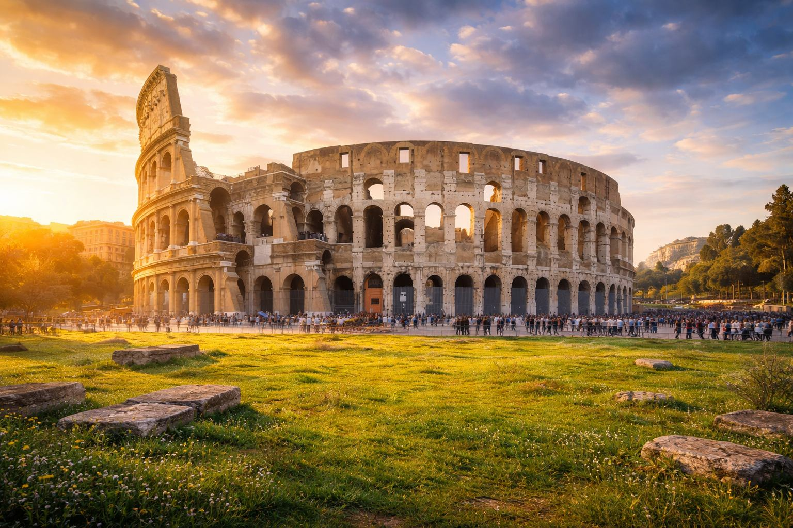
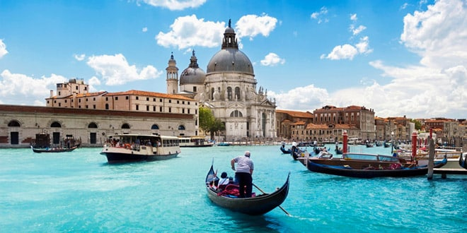
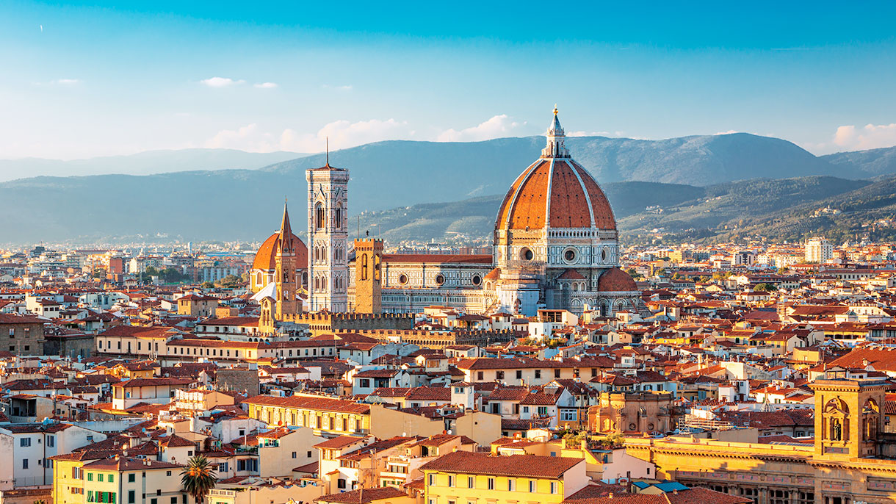

Города
Меню
Содержание страницы
- Рим
- Венеция
- Флоренция
Рим
Рим — столица Италии. Здесь сохранились памятники
Древнего Рима, старинные площади и фонтаны.
Город подойдёт тем, кто интересуется историей
и любит пешие прогулки.

Что посмотреть в Риме
-
Достопримечательности Древнего Рима:
- Колизей — древний амфитеатр.
- Римский форум — центр общественной жизни Древнего Рима.
- Пантеон — древний храм, позднее ставший церковью.
-
Площади и фонтаны:
- Фонтан Треви.
- Площадь Навона.
К Венеции |
К Флоренции |
К началу страницы
Венеция
Венеция расположена на островах в лагуне Адриатического
моря. Город известен каналами, мостами и старинными
дворцами. По его историческому центру передвигаются
пешком или по воде.

Что посмотреть в Венеции
- Площадь Сан-Марко — главную площадь города.
- Собор Святого Марка.
- Мост Риальто через Гранд-канал.
- Дворец дожей — бывшую резиденцию правителей Венеции.
К Риму |
К Флоренции |
К началу страницы
Флоренция
Флоренция — город в регионе Тоскана.
Она считается одним из главных центров искусства
эпохи Возрождения. Здесь можно посетить музеи,
увидеть старинные храмы и погулять вдоль реки Арно.

Что посмотреть во Флоренции
- Собор Санта-Мария-дель-Фьоре.
- Галерею Уффици — художественный музей.
- Понте-Веккьо — старинный мост через реку Арно.
- Площадь Синьории.
К Риму |
К Венеции |
К началу страницы